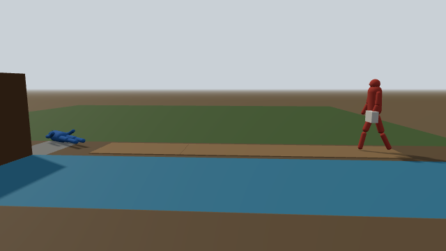
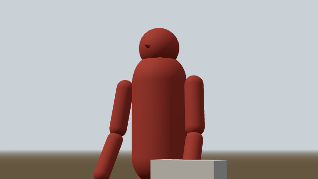
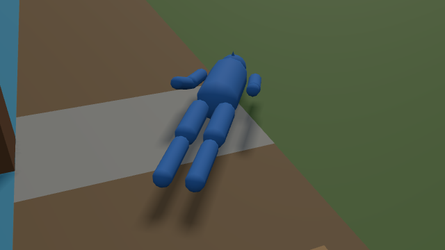
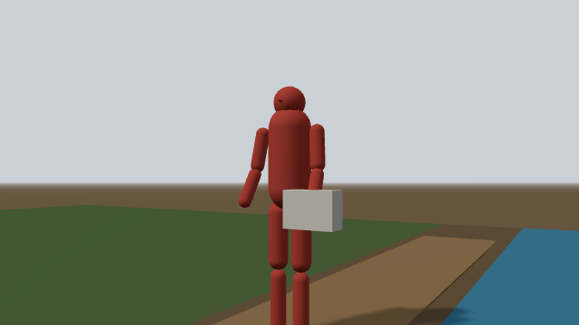
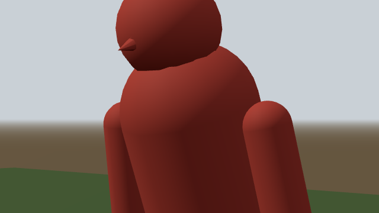
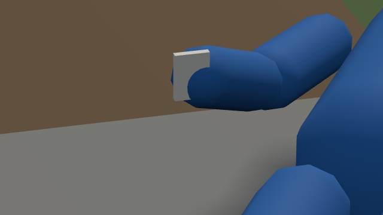
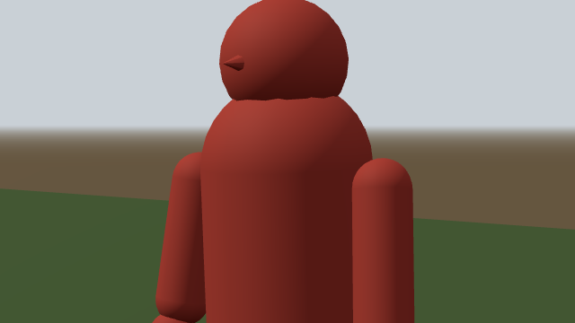
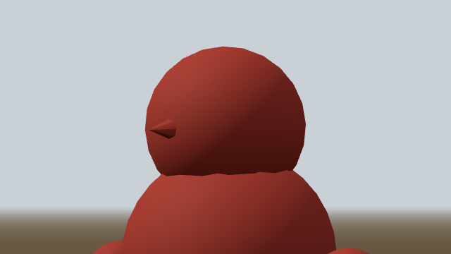
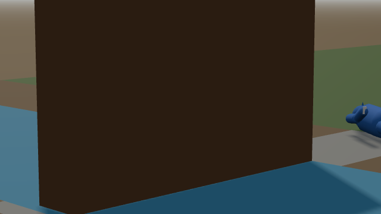

Shot 7 · camera C2 · CU single

Let recognition land on Aruni without adding an outward outburst.
Each shot rendered from its camera on the floor plan (position, height, lens). Grey place, coloured mannequins, white props. Free, no AI.

Establish the canal, paddy, path, sluice and both people before directing attention to Nimal.

Give Aruni the first conscious recognition and establish her restrained response.

Answer Aruni's look with what she sees, keeping the key concealed.

Show the complete final approach and begin the kneel with clear spatial continuity.

Match the kneel into an intimate view of Aruni as she makes contact.

Deliver the central discovery with unmistakable readable evidence.
Let recognition land on Aruni without adding an outward outburst.
Make the outgoing call visually explicit without inventing screen wording.

Give Aruni her spoken appeal in her own frame, then leave room for an answer.

Make the absence of an answer register through held attention rather than added action.

Release the face into an environmental cutaway while the distant horn meets the rain.